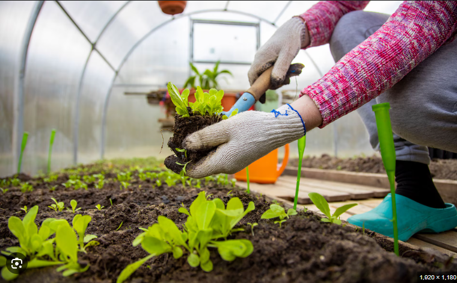

¿QUÉ SE HACE EN EL INVERNADERO?
En un invernadero se cultiva una gran variedad de plantas (hortalizas, flores, frutales) durante todo el año, controlando el clima (temperatura, humedad, luz) para protegerlas de factores externos como el frío, viento o plagas, y así optimizar su crecimiento y producción mediante siembra, riego, poda y control de plagas dentro de un ambiente controlado y eficiente.
¿Qué se hace?
Control ambiental: Se regula la temperatura, humedad y luz solar para crear un microclima ideal para cada cultivo.
Siembra y trasplante: Se preparan semilleros y se trasplantan plántulas, adelantando ciclos de cultivo.
Cuidado y mantenimiento: Incluye riego, fertilización, poda, pinzado y manipulación de insectos polinizadores.
Protección: Se aísla a las plantas de heladas, granizo, vientos fuertes, exceso de lluvia y plagas, reduciendo el uso de pesticidas.
Producción eficiente: Permite cultivar productos fuera de temporada y en suelos no aptos, usando el agua y recursos de forma más eficiente.
¿Qué se cultiva?
Hortalizas: Tomates, lechugas, cebollas, pepinos.
Hierbas y especias: Diferentes variedades.
Flores: Rosas y plantas ornamentales.
Frutales: Nísperos, nectarinas, melocotoneros, etc.
Beneficios clave
Producción continua: Cosechar todo el año.
Mayor calidad: Productos que cumplen estándares de exportación.
Sostenibilidad: Uso eficiente del agua y menor impacto ambiental.
Versatilidad: Cultivar en casi cualquier clima y suelo.

VOLVER AL MENU